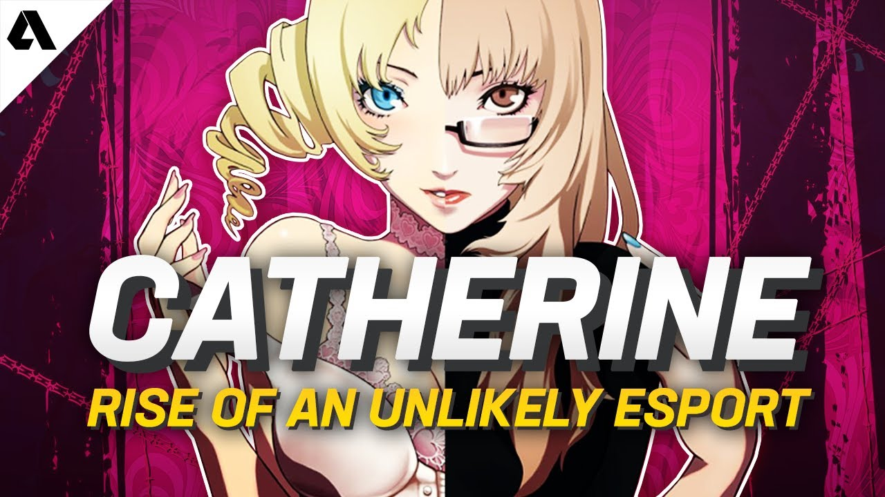

Catherine (Japonca: キャサリン Kyasarin), 2011 yılında Atlus tarafından geliştirilen bir bulmaca video oyunudur. Oyun, 2011 yılında Japonya ve Kuzey Amerika'da, 2012 yılında PAL bölgelerinde PlayStation 3 ve Xbox 360 için ve 2019 yılında Microsoft Windows için piyasaya sürüldü.[1]
Oyun, uzun zamandır sevgilisi olan Katherine ile benzer şekilde güzel bir bayan olan Catherine arasında kalırken doğaüstü kabuslarla boğuşan Vincent Brooks'u konu etmektedir. Oyun, Vincent'ın bir sosyal simülasyon oyunundaki karakterlerle etkileşime girdiği gündüzler ile üç boyutlu kulelerde kombine platformlar oluşturma ve bulmacaları çözme yoluyla gezinmesi gereken rüyalar olarak iki kısma ayrılmıştır.[2] Oyunun sonu, Vincent'ın hikâye boyunca yaptığı seçimlere göre değişir.